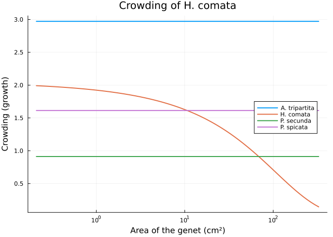
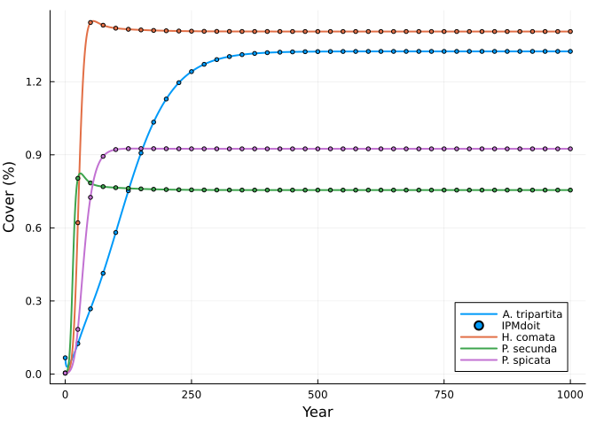
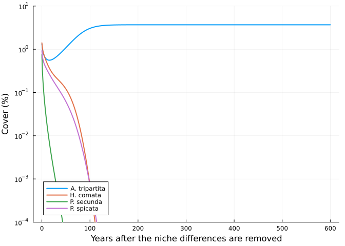
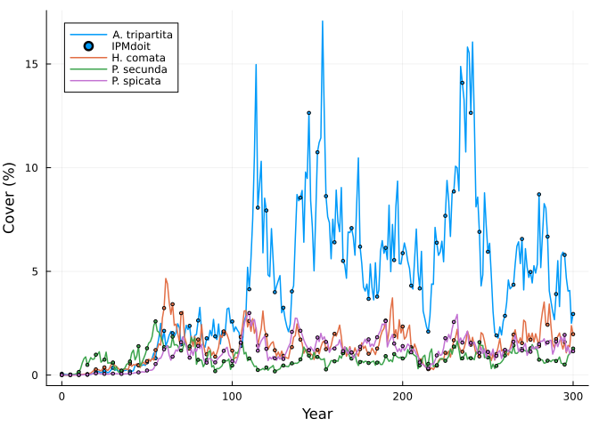

Four perennials of the sagebrush steppe: coexistence through crowding
Simon Frost
- A shrub and three grasses
- Crowding
- The life cycle as a net
- Each species alone
- The four together
- Does each species invade when rare?
- Removing the niche differences
- Where the niche differences lie
- Years that differ
- The comparison with IPMdoit and the papers
- What is measured and what is assumed
- References
ENV["GKSwstype"] = "100"
using MatrixCommunityModels
using LinearAlgebra, Printf
using Plots
BLAS.set_num_threads(1) # eigenvalues of matrices this small are found fastest on one threadA shrub and three grasses
In the first half of the twentieth century every plant in a set of permanent quadrats of one square metre at the U.S. Sheep Experiment Station near Dubois, Idaho, was mapped each summer; the fits used here have effects for 22 of those years. Four species make up most of the plant cover: the shrub Artemisia tripartita (threetip sagebrush, artr) and the bunchgrasses Hesperostipa comata (needle-and-thread, heco), Poa secunda (Sandberg bluegrass, pose) and Pseudoroegneria spicata (bluebunch wheatgrass, pssp). From the maps one can follow each genet (a plant and its clonal parts) from year to year and record its area, whether it survived, how much it grew, and which other plants grew around it.
Adler, Ellner & Levine (2010) fitted the growth, survival and recruitment of the four species to these maps, with each rate depending on how crowded a genet was by its neighbours of each species, and put the fits together as an integral projection model (IPM) of the community. They asked whether the species coexist, and why. Chu & Adler (2015) refitted the model and compared it with four other grassland communities.
This vignette rebuilds the model and checks it against the R code of the authors’ group. The papers themselves could not be read (see the end); the model, its parameters and its numerical scheme are those of the R package IPMdoit (Tredennick & Adler), whose Idaho example runs it.
In the model a species never refers to another species. A genet is crowded by the cover of each species around it, and a species’ recruits depend on the cover of each species. The four covers are therefore four pools: each species adds its basal area to its own pool, and reads all four, each with its own coefficients. The community of four IPMs is solved by IntegralProjectionModels.jl.
Crowding
The crowding of a genet by species $j$ adds up the areas of the genets of $j$ around it, each weighted by $\exp(-\alpha_j d^2)$ at distance $d$. In the IPM the positions of the genets are not tracked, and crowding is replaced by its expected value.
- Other species. Genets of another species are scattered at random and may overlap the focal genet, so the expected crowding is $\pi C_j / \alpha_j$, where $C_j$ is the cover of species $j$ as a share of the ground. It depends only on the pool.
- Its own species. Genets of one species do not overlap. A conspecific of radius $\rho$ is at least $r + \rho$ away from a focal genet of radius $r$, so crowding by its own species is smaller for a large genet and depends on the sizes of its conspecifics, not only on their cover. It is computed from the species’ own state.
sagebrush_crowding returns both, for genets of each size. Here is the crowding felt by needle-and-thread genets at the equilibrium of the four species, which is computed below. The reference files in test/reference hold that equilibrium as IPMdoit reached it, and other runs of IPMdoit (test/reference/R/run_sagebrush_reference.R).
reference(file) = [split(l, ",") for l in readlines(joinpath(pkgdir(MatrixCommunityModels), "test", "reference", file))[2:end]]
number(x) = parse(Float64, x)
kinds = (:artr, :heco, :pose, :pssp)
codes = Dict("ARTR" => :artr, "HECO" => :heco, "POSE" => :pose, "PSSP" => :pssp)
names = Dict(:artr => "A. tripartita", :heco => "H. comata", :pose => "P. secunda", :pssp => "P. spicata")
states = reference("sagebrush_state.csv")
saved(run, k) = [number(r[4]) for r in states if r[1] == run && codes[r[2]] == k]
saved_state(c, run) = state_vector(c, (k => saved(run, k) for k in species_names(c))...)
cover(c, n, env = nothing) = [getproperty(pool_totals(c, n, env), Symbol(k, :_cover)) for k in kinds]
four = sagebrush_community()
together = saved_state(four, "community")
pools = pool_totals(four, together, nothing)
W = sagebrush_crowding(:heco, saved("community", :heco), pools)
area = exp.(meshpoints(sagebrush_stage(:heco)))
plot(area, W.growth; xscale = :log10, lw = 2, xlabel = "Area of the genet (cm²)", ylabel = "Crowding (growth)",
label = permutedims([names[k] for k in kinds]), legend = :right, title = "Crowding of H. comata")
Crowding by its own species falls as a genet grows, because its conspecifics must stand further away; crowding by the other species does not depend on its size. The coefficients that turn crowding into an effect on each vital rate:
function show_matrix(label, rows)
println(label)
println(" ", join(rpad.(String.(kinds), 11)))
for (k, row) in zip(kinds, rows)
println(rpad(" " * String(k), 12), join([@sprintf("%-11.4g", x) for x in row]))
end
end
show_matrix("growth: effect of crowding by the column species on the row species", [SAGEBRUSH_PARAMETERS[k].growth.crowding for k in kinds])
show_matrix("survival (logit scale)", [SAGEBRUSH_PARAMETERS[k].survival.crowding for k in kinds])
show_matrix("recruitment: effect of the square root of percent cover", [SAGEBRUSH_PARAMETERS[k].recruitment.crowding for k in kinds])growth: effect of crowding by the column species on the row species
artr heco pose pssp
artr -0.02751 0.01272 0.01676 0.003194
heco -4.474e-05 -0.0285 0.008406 -0.002836
pose 5.357e-05 0.003124 -0.08411 -0.004286
pssp -0.0003398 -0.002687 -0.0005262 -0.04507
survival (logit scale)
artr heco pose pssp
artr -0.02357 -0.02006 0.03139 0.01581
heco -0.0004985 -1.022 -0.005008 0.01251
pose 0.0001499 0.0005666 -0.9085 0.01207
pssp 0.0008776 -0.001318 0.02468 -0.1545
recruitment: effect of the square root of percent cover
artr heco pose pssp
artr -0.4084 -0.5915 -0.4426 -0.2884
heco -0.03108 -1.723 -0.2683 -0.3503
pose -0.05736 -0.1888 -2.272 -0.1254
pssp -0.01905 -0.308 -0.2088 -1.933In recruitment, and in the survival of the three grasses, each species is far more sensitive to its own species than to the others. That is a niche difference, in the sense of Chesson (2000): each species limits itself more than it limits the others. (Within a row of the growth and survival tables the coefficients multiply crowding measured on different spatial scales, one for each neighbour species, so they are not directly comparable; those of recruitment all multiply the square root of a percent cover.) A few coefficients are positive (facilitation); IPMdoit keeps them, and Chu & Adler (2015) set them to zero in their final fits.
The life cycle as a net
A species has a single stage, plant, carrying the logarithm of the genet’s area in cm², on the mesh of IPMdoit: from log 0.2 to 1.1 times the logarithm of the largest genet seen, in 75 cells for the shrub and needle-and-thread and 50 for the other two grasses. sagebrush_plant builds it in this form (abridged from src/sagebrush.jl):
life = kernel_net(plant,
:growing => responsive(growing), # survival × growth, rebuilt each year
:recruiting => (y, x) -> exp(x) * recruit_size(y)) # recruits in proportion to area
net = births(respond(life, :recruiting => recruiting), :recruiting)
species(kind, net; occupies = [own_cover => trait_weights(plant, u -> exp(u) / 10_000)],
reads = other_covers)growingholds the genets that survive and grow. Survival is logistic in log area and crowding; next year’s log area is normal, with a mean linear in log area and crowding and a variance that changes with the mean. Crowding depends on the pools and on the species’ own state, so the kernel is rebuilt each year (responsive).recruitingholds the recruits. A species with percent cover $C$ has $C \exp(a + \sum_j b_j \sqrt{C_j})$ recruits per m², shared among its genets in proportion to their area. Recruits have a log area drawn from a normal distribution truncated at log 0.2.- The species adds its basal area, as a share of the m², to its cover pool.
The environment of a step is nothing for the mean year (the year effects of the fits set to zero) or a year from 1 to 22, the years of the data, for that year’s fitted effects.
(species = species_names(four), pools = pool_names(four), states = length(four),
stages_of_artr = stage_names(four, :artr)[[1, 2, end]])(species = [:artr, :heco, :pose, :pssp], pools = [:artr_cover, :heco_cover, :pose_cover, :pssp_cover], states = 250, stages_of_artr = [:plant1, :plant2, :plant75])Each species alone
Alone, a species settles where its frozen matrix has a growth rate of one. Its matrix depends on its own state through its cover and through the crowding by conspecifics, which scales with its numbers when the shape of the size distribution is fixed. equilibrium, given the pool and a range of covers, finds that cover and the stable size distribution there without iterating the dynamics.
runs = reference("sagebrush_runs.csv")
run_rows(name) = [(year = parse(Int, r[2]), cover = number.(r[3:6])) for r in runs if r[1] == name]
alone = Dict(k => sagebrush_plant(k) for k in kinds)
settled_alone = Dict(k => equilibrium(alone[k], Symbol(k, :_cover) => (0.001, 0.2), sagebrush_state(k), nothing) for k in kinds)
println("species cover alone (%) IPMdoit, year 1500 difference")
for (j, k) in enumerate(kinds)
theirs = last(run_rows("alone_" * uppercase(String(k)))).cover[j]
@printf("%-15s %15.4f %18.4f %10.1e\n", names[k], 100 * settled_alone[k].total, 100 * theirs,
abs(settled_alone[k].total / theirs - 1))
endspecies cover alone (%) IPMdoit, year 1500 difference
A. tripartita 3.6860 3.6860 1.5e-07
H. comata 1.7502 1.7502 5.9e-08
P. secunda 0.9273 0.9273 8.1e-08
P. spicata 1.2924 1.2924 1.5e-06The four together
The community is started as IPMdoit’s Idaho example starts it, with 0.001 genets per m² for each unit of log area in every cell, and run through 1000 mean years.
start = state_vector(four, (k => sagebrush_state(k) for k in kinds)...)
sol = project(four, start, fill(nothing, 1000))
covers = reduce(vcat, permutedims(cover(four, row)) for row in eachrow(sol.u))
ref = run_rows("community")
plot(; xlabel = "Year", ylabel = "Cover (%)", legend = :bottomright)
for (j, k) in enumerate(kinds)
plot!(0:1000, 100 .* covers[:, j]; lw = 2, color = j, label = names[k])
shown = [r for r in ref if r.year <= 1000 && r.year % 25 == 0]
scatter!([r.year for r in shown], [100 * r.cover[j] for r in shown]; ms = 2.5, color = j, label = j == 1 ? "IPMdoit" : "")
end
plot!()
apart = maximum(maximum(abs.(cover(four, sol.u[r.year + 1, :]) ./ r.cover .- 1)) for r in ref if r.year <= 1000)
(largest_relative_difference_from_IPMdoit = apart,)(largest_relative_difference_from_IPMdoit = 1.188674036978199e-6,)The grasses settle within a century; the shrub takes several. The state that IPMdoit reaches after 1500 years is an equilibrium of this model too:
moved = maximum(abs, advance(four, together, nothing) .- together) / maximum(together)
println("a year moves IPMdoit's equilibrium by ", @sprintf("%.1e", moved), " of its largest cell")
for (j, k) in enumerate(kinds)
@printf("%-14s cover %.4f%% together, %.4f%% alone\n", names[k], 100 * cover(four, together)[j], 100 * settled_alone[k].total)
enda year moves IPMdoit's equilibrium by 3.9e-08 of its largest cell
A. tripartita cover 1.3244% together, 3.6860% alone
H. comata cover 1.4060% together, 1.7502% alone
P. secunda cover 0.7550% together, 0.9273% alone
P. spicata cover 0.9244% together, 1.2924% aloneEach species holds less cover with the others than alone, the shrub much less.
Does each species invade when rare?
The species coexist if each, when rare, increases in the community of the other three. invasion_growth_rate freezes the invader at zero abundance in the pools of the residents, at their equilibrium, and returns the growth rate of its matrix. A rare invader crowds nobody, including itself, and its recruits per unit of cover are those of the recruitment function at zero cover of its own species.
The residents’ equilibria are those reached by IPMdoit (1500 years from a low start); a year in this model moves each of them by less than one part in a million.
invasion = reference("sagebrush_invasion.csv")
function invader_rate(k, niche; label = niche === true ? "niche" : "none")
others = Tuple(x for x in kinds if x != k)
resident = sagebrush_community(; niche_differences = niche, kinds = others)
n = saved_state(resident, "residents_" * label * "_without_" * uppercase(String(k)))
moved = maximum(abs, advance(resident, n, nothing) .- n) / maximum(n)
return invasion_growth_rate(sagebrush_plant(k; niche_differences = niche), resident, n, nothing), moved
end
println("invader growth rate when rare IPMdoit residents moved by")
rates_with = Dict{Symbol, Float64}()
for r in invasion
r[1] == "niche" || continue
k = codes[r[2]]
rate, residents_moved = invader_rate(k, true)
rates_with[k] = rate
@printf("%-18s %20.6f %10.6f %.0e\n", names[k], rate, number(r[3]), residents_moved)
endinvader growth rate when rare IPMdoit residents moved by
A. tripartita 1.030879 1.030879 4e-08
H. comata 1.267234 1.267234 6e-08
P. secunda 1.495015 1.495015 5e-08
P. spicata 1.186688 1.186688 1e-08Every species increases when rare, so the four coexist. The rates differ: the shrub, which dominates the cover, increases by 3% a year when rare, and P. secunda by half.
Removing the niche differences
Adler et al. (2010) asked what holds the species together by removing the niche differences from the model: if each species were limited by the others as much as by itself, would they still coexist? With niche_differences = false each species is affected by the cover of every species as by its own. In recruitment, which reads the covers directly, the coefficient of each neighbour species becomes the species’ coefficient on itself. In growth and survival the crowding by species $j$ is measured on its own spatial scale $\alpha_j$, so the coefficient of $j$ becomes the species’ own coefficient times $\alpha_j / \alpha_i$: a unit of cover of any species, scattered at random, then crowds a genet as a unit of its own species’ cover would.
println("invader growth rate when rare IPMdoit")
for r in invasion
r[1] == "none" || continue
k = codes[r[2]]
@printf("%-18s %20.6f %10.6f\n", names[k], first(invader_rate(k, false)), number(r[3]))
endinvader growth rate when rare IPMdoit
A. tripartita 0.971580 0.971580
H. comata 0.791831 0.791831
P. secunda 0.516821 0.516821
P. spicata 0.846289 0.846289No species increases when rare. Without its niche differences the community is not held together. The shrub excludes the three grasses; among the grasses alone, needle-and-thread excludes the other two, and the shrub cannot then invade it. Started at the equilibrium of the full model, the community without niche differences loses its grasses:
flat = sagebrush_community(; niche_differences = false)
decline = project(flat, together, fill(nothing, 600))
lost = reduce(vcat, permutedims(cover(flat, row)) for row in eachrow(decline.u))
plot(0:600, 100 .* lost; lw = 2, yscale = :log10, ylims = (1e-4, 10), xlabel = "Years after the niche differences are removed",
ylabel = "Cover (%)", label = permutedims([names[k] for k in kinds]), legend = :bottomleft)
for (j, k) in enumerate(kinds[2:end])
year = findfirst(<(0.01 * lost[1, j + 1]), lost[:, j + 1])
println(names[k], " falls below a hundredth of its cover after ", year === nothing ? "more than 600" : year - 1, " years")
endH. comata falls below a hundredth of its cover after 80 years
P. secunda falls below a hundredth of its cover after 16 years
P. spicata falls below a hundredth of its cover after 78 yearsThese are mean years. Adler et al. (2010) give three to four centuries for the exclusion, and their simulations are taken to draw a year at random each step, as IPMdoit does; the same experiment with drawn years is run at the end of the section “Years that differ”.
Where the niche differences lie
Removing the niche differences from some vital rates and not others shows which carry them. niche_differences can list the vital rates that keep theirs. The residents are found here by iterating from their equilibrium in the full model.
function invasion_rates(niche)
map(kinds) do k
others = Tuple(x for x in kinds if x != k)
resident = sagebrush_community(; niche_differences = niche, kinds = others)
n0 = saved_state(resident, "residents_niche_without_" * uppercase(String(k)))
eq = equilibrium(resident, n0, nothing; tol = 1e-9, maxiter = 5000)
eq.converged || @warn "residents without $k did not settle"
invasion_growth_rate(sagebrush_plant(k; niche_differences = niche), resident, eq.n, nothing)
end
end
recruitment_only = invasion_rates((:recruitment,)) # niche differences kept in recruitment only
growth_and_survival = invasion_rates((:growth, :survival)) # kept in growth and survival only
println("invader all kept recruitment only growth and survival only")
for (j, k) in enumerate(kinds)
@printf("%-18s %8.4f %16.4f %24.4f\n", names[k], rates_with[k], recruitment_only[j], growth_and_survival[j])
endinvader all kept recruitment only growth and survival only
A. tripartita 1.0309 0.9612 1.0638
H. comata 1.2672 0.8455 1.0141
P. secunda 1.4950 1.1884 0.9343
P. spicata 1.1867 1.0684 0.9809Neither stage holds the community on its own. With niche differences in recruitment only, the shrub and needle-and-thread can no longer invade; with them in growth and survival only, the two smaller grasses cannot. The shrub depends most on its niche differences in growth and survival, and P. secunda on those in recruitment, where its coefficient on itself (-2.27) is at least twelve times its coefficients on the others.
Years that differ
The fitted models include an effect of each of the 22 years of the data on growth, survival and recruitment. Drawing a year at random for each step gives a fluctuating environment. The R script drew a sequence of 600 years, which is used here too:
years = [parse(Int, r[2]) for r in reference("sagebrush_years.csv")]
wild = project(four, start, years[1:300])
wild_covers = reduce(vcat, permutedims(cover(four, row)) for row in eachrow(wild.u))
ref = run_rows("community_years")
plot(; xlabel = "Year", ylabel = "Cover (%)", legend = :topleft)
for (j, k) in enumerate(kinds)
plot!(0:300, 100 .* wild_covers[:, j]; lw = 1.5, color = j, label = names[k])
scatter!([r.year for r in ref[1:5:end]], [100 * r.cover[j] for r in ref[1:5:end]]; ms = 2, color = j, label = j == 1 ? "IPMdoit" : "")
end
plot!()
(largest_relative_difference_from_IPMdoit = maximum(maximum(abs.(cover(four, wild.u[r.year + 1, :]) ./ r.cover .- 1)) for r in ref),
mean_cover_after_year_100 = round.(100 .* vec(sum(wild_covers[102:end, :]; dims = 1)) ./ 200; digits = 2))(largest_relative_difference_from_IPMdoit = 1.4028002803812e-6, mean_cover_after_year_100 = [6.23, 1.53, 0.8, 1.43])The covers swing from year to year, and the shrub, with the largest year effects on recruitment, holds on average about five times its cover at the equilibrium of the mean year. A model run in the mean year is therefore not a model of the average year.
The growth rate of a rare invader in a fluctuating environment is the long-run average of its growth from year to year (stochastic_invasion_rate, which returns the geometric mean of the yearly growth factors). The residents start at their mean-year equilibrium and run through the 600 years; the first 100 are left out. The last column is the logarithm of the growth rate in the mean year as a share of that in fluctuating years.
stochastic = reference("sagebrush_stochastic_invasion.csv")
println("invader fluctuating years IPMdoit mean year share of log growth rate in the mean year")
for r in stochastic
k = codes[r[1]]
others = Tuple(x for x in kinds if x != k)
resident = sagebrush_community(; kinds = others)
n0 = saved_state(resident, "residents_niche_without_" * r[1])
rate = stochastic_invasion_rate(sagebrush_plant(k), resident, n0, years; burnin = 100)
@printf("%-18s %17.6f %8.6f %9.4f %6.0f%%\n", names[k], rate, number(r[4]), rates_with[k],
100 * log(rates_with[k]) / log(rate))
endinvader fluctuating years IPMdoit mean year share of log growth rate in the mean year
A. tripartita 1.092135 1.092135 1.0309 35%
H. comata 1.309995 1.309995 1.2672 88%
P. secunda 1.521909 1.521909 1.4950 96%
P. spicata 1.245614 1.245614 1.1867 78%Fluctuations raise the growth rate of every invader. For the grasses most of the growth when rare is already there in the mean year, so it comes from mechanisms that do not need fluctuations; for the shrub, most of it comes with the fluctuations. This comparison is a rough one: the residents also differ between the two settings, and it is not the partition of Adler et al. (2010), which could not be read.
Exclusion when years differ
Without niche differences the grasses fell to a hundredth of their cover in 16 to 80 mean years, where Adler et al. (2010) report three to four centuries. Their simulations are taken to draw the years, so the experiment is repeated here with a year drawn at random from the 22 for each step. The community starts, as before, at the mean-year equilibrium of the full model. A grass counts as excluded in the first year its cover is below a hundredth of its starting cover (the definition used above); the first year below a ten-thousandth is given as a stricter one. There are 40 sequences of years, drawn with Xoshiro(seed) for seeds 1 to 40.
using Random, Statistics
# the first year each grass is below a share (1e-2, then 1e-4) of its starting cover
function exclusion_years(envs)
n = copy(together)
c0 = cover(flat, n)
when = zeros(Int, 3, 2)
for (t, env) in enumerate(envs)
n = advance(flat, n, env)
c = cover(flat, n)
for j in 1:3, (s, share) in enumerate((1e-2, 1e-4))
when[j, s] == 0 && c[j + 1] < share * c0[j + 1] && (when[j, s] = t)
end
all(>(0), when) && break
end
return when
end
in_mean_years = exclusion_years(fill(nothing, 600))
drawn = [exclusion_years(rand(Xoshiro(seed), 1:22, 1500)) for seed in 1:40]
println(" below a hundredth below a ten-thousandth")
println("grass mean years drawn: median (range) mean years drawn: median (range)")
for (j, k) in enumerate(kinds[2:end])
print(rpad(names[k], 17))
for s in 1:2
times = [d[j, s] for d in drawn]
all(>(0), times) || error("a grass outlasted 1500 drawn years")
@printf("%10d %9.1f (%d to %d)%s", in_mean_years[j, s], median(times), extrema(times)..., s == 1 ? " " : "")
end
println()
end
later = count(d -> any(d[:, 1] .> in_mean_years[:, 1]), drawn)
println("sequences in which some grass lasts longer than in mean years: ", later, " of ", length(drawn)) below a hundredth below a ten-thousandth
grass mean years drawn: median (range) mean years drawn: median (range)
H. comata 80 35.0 (13 to 119) 109 50.0 (21 to 137)
P. secunda 16 11.0 (5 to 25) 46 25.0 (10 to 52)
P. spicata 78 36.5 (17 to 81) 115 56.0 (25 to 124)
sequences in which some grass lasts longer than in mean years: 8 of 40Years that differ do not delay the exclusion: they bring it forward, by about half. The median time to a hundredth of the starting cover is 35 years for needle-and-thread, 11 for P. secunda and 36.5 for P. spicata. In 8 of the 40 sequences some grass lasts longer than in the mean year, and the longest time here is 119 years. IPMdoit, run on the same 200 sequences (seeds 1 to 200, a check outside this vignette), gives the same year of exclusion for every grass and sequence as this package, with medians of 39, 11 and 41 years; in one sequence of the 200 needle-and-thread lasts 905 years, and in the others none lasts beyond
- Started instead from the state of the full model after the 300
drawn years of the figure above, and measured against that starting cover, the grasses go sooner still (medians 25, 5 and 30 years over the same 200 sequences, also a check outside this vignette). A likely reason is the shrub. In drawn years it holds on average several times its cover in the mean year (above), and without niche differences each grass is limited by the shrub’s cover as much as by its own.
Fluctuating years therefore do not close the gap with the three to four centuries of Adler et al. (2010); they widen it.
The comparison with IPMdoit and the papers
| Check | Agreement |
|---|---|
| Recruitment coefficients against Chu & Adler (2015, Appendix H), 16 values | equal to the four decimals printed |
| Kernel entries, four species, with and without niche differences, mean year and year 3 | absolute difference below 1e-8 |
| Growth rates of the frozen kernels | relative difference below 1e-7 |
| Crowding by other species | equal to rounding |
| Crowding by the species’ own genets | within 1e-5 of the largest value; the difference is the error of R’s integrate at its default tolerance |
| Community over 30 mean years; over 20 drawn years | relative difference in cover below 4e-7 |
| Community over 1000 mean years; over 300 drawn years | relative difference in cover below 2e-6 |
| Each species alone, cover at equilibrium | relative difference below 2e-6 |
| IPMdoit’s equilibria of four and of three species, stepped once here | moved by less than 1e-7 of the largest cell |
| Invasion growth rates, with and without niche differences | relative difference below 1e-6 |
| Stochastic invasion growth rates over 500 years | equal to the six decimals printed |
| Each species invades when rare (Adler et al. 2010, abstract) | yes, growth rates 1.03 to 1.50 |
| Without niche differences the weaker competitors are lost (Adler et al. 2010, abstract) | yes, every invader declines |
| Exclusion takes 300 to 400 years (Adler et al. 2010, abstract) | no: the grasses fall to a hundredth of their cover in 16 to 80 mean years, and sooner when years are drawn at random (medians 11 to 36.5 years over 40 sequences; one sequence in 200 keeps a grass for 905 years) |
| Exclusion without niche differences, 200 sequences of drawn years | the same year of exclusion as IPMdoit for every grass and sequence |
| Stabilisation comes mostly from recruitment (Chu & Adler 2015, abstract) | in part: recruitment holds the two smaller grasses, growth and survival the shrub |
The conspecific crowding is an integral that IPMdoit computes with R’s integrate, whose default relative tolerance is 1.2e-4. This package integrates the same spline of the cumulative cover piece by piece with eight-point Gauss-Legendre rules. For the genet where the two differ most (P. spicata, cell 33, growth) R gives 0.273079826 at its default tolerance and 0.273076048 at a tolerance of 1e-13; this package gives 0.273076048. The small differences in the runs come from there.
What is measured and what is assumed
| Quantity | Source |
|---|---|
| Growth, survival and recruitment, as functions of size, crowding and cover, with year effects | fitted to the Idaho maps (Chu & Adler 2015 and their group); the fits shipped with IPMdoit |
| Recruitment coefficients | as published by Chu & Adler (2015, Appendix H) |
| Growth and survival coefficients | IPMdoit’s fit, which keeps positive coefficients; Chu & Adler (2015) set these to zero, so their published values differ slightly (for example -0.0240 against -0.0275 for the shrub on itself in growth) |
Spatial scales of crowding (alpha) | IPMdoit, by neighbour species |
| Size of recruits | mean and variance of the log area of the recruits in IPMdoit’s data files |
| Mesh: log 0.2 to 1.1 times the log of the largest genet, 75 or 50 cells | IPMdoit |
| Expected crowding: overlap with other species, no overlap within a species | IPMdoit (crowd_overlap, WrijG, WrijS) |
| The mean year: year effects set to zero, recruitment intercept at its posterior mean | assumed here; IPMdoit draws a year at random each step |
Removal of niche differences, with the coefficients rescaled by alpha in growth and survival | assumed here; the procedure of the papers could not be read |
| Exclusion: the first year below a hundredth (or a ten-thousandth) of the starting cover | assumed here; the definition of the paper could not be read |
| Starting state | IPMdoit’s Idaho example |
The model and its sources part in these ways:
- The papers could not be read, so the results here are compared with their abstracts only. The model is IPMdoit’s, which was written by the same group five years after the first paper and follows Chu & Adler (2015). It is not known whether it is the model of Adler et al. (2010) in every detail.
- IPMdoit’s example does not run as it stands. To run it, the reference script passes the cover and population vectors that
crowd_overlapneeds, multiplies the kernel by the mesh width (whichmake_K_matrixleaves out andmake_K_matrix_ssincludes), and writes the recruits per unit of cover without dividing by the species’ cover, so that an invader with no cover has recruits. These are the only changes. - Removing niche differences by copying a species’ own coefficient onto its neighbours, without rescaling, makes the shrub’s neighbours crowd much more than the shrub: its spatial scale is twelve times wider in survival. Done that way, a rare needle-and-thread has a growth rate of 0.008. The rescaling used here avoids that, but is a choice.
- The grasses vanish within a century without their niche differences, not in the three to four centuries of Adler et al. (2010). Drawing the years at random, as their simulations are taken to do, does not close the gap: it brings the exclusion forward, to a median of 11 to 36.5 years. The difference must lie elsewhere, and what follows cannot be checked without the paper. Their procedure for removing niche differences is not known here; the result depends on it (see the rescaling above). Their definition of exclusion and their starting state may differ. Their fits were made in 2010, while IPMdoit’s follow Chu & Adler (2015). Their exclusion times may also come from another model: the paper’s keywords list an individual-based model as well as an integral projection model, and in a model of discrete plants a rare grass need not decline as its expected cover does in an IPM.
- Genets that grow past the end of the mesh are lost, as in IPMdoit.
- The observed covers at Dubois were not compared with the model.
IPMdoit was read in full: its R functions, its Idaho example and the scripts that read the parameters. The data and scripts of Chu & Adler (2015) on Dryad could not be downloaded: Dryad refused automated access. Of Chu & Adler (2015), Appendix H (the coefficients) and the abstract were read. Of Adler et al. (2010), only the abstract and its keywords. Both papers are behind the publisher’s paywall. A further search in November 2026 found no open copy of Adler et al. (2010) or its supplement: the publisher refused automated access, Semantic Scholar lists the paper as closed, and the repository records of Utah State University and Princeton link only to the publisher.
References
Adler, P. B., Ellner, S. P. & Levine, J. M. (2010). Coexistence of perennial plants: an embarrassment of niches. Ecology Letters 13, 1019-1029. https://doi.org/10.1111/j.1461-0248.2010.01496.x
Chesson, P. (2000). Mechanisms of maintenance of species diversity. Annual Review of Ecology and Systematics 31, 343-366.
Chu, C. & Adler, P. B. (2015). Large niche differences emerge at the recruitment stage to stabilize grassland coexistence. Ecological Monographs 85, 373-392. https://doi.org/10.1890/14-1741.1
Chu, C. & Adler, P. B. (2015). Data from: Large niche differences emerge at the recruitment stage to stabilize grassland coexistence. Dryad (CC0). https://doi.org/10.5061/dryad.37n6f
Ellner, S. P. & Rees, M. (2006). Integral projection models for species with complex demography. The American Naturalist 167, 410-428.
Tredennick, A. T. & Adler, P. B. (2015). IPMdoit: in-house R package for multi-species integral projection models, commit 94124a4. MIT licence. https://github.com/atredennick/IPMdoit